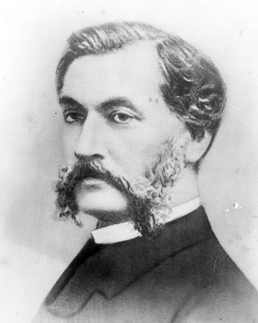

The Roundhay Garden Scene
Another early motion picture is "Roundhay Garden Scene," filmed by French inventor Louis Le Prince in 1888. The film was only two seconds long and featured a short scene of people walking around in a garden. Le Prince used a camera he had designed himself, which captured images onto a single roll of film. He filmed the scene using a series of lenses that captured images at different angles, creating the illusion of motion when the film was played back. While "Roundhay Garden Scene" is often cited as the first motion picture, there is some debate over whether it truly counts as a movie, as it was never publicly shown during Le Prince's lifetime and there is no evidence that he intended it to be part of a larger narrative.
